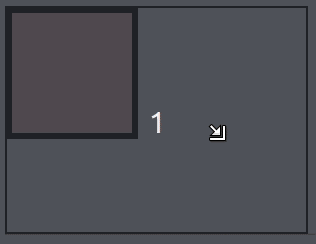

Hieronder zie je wederom een voorbeeld van een transition. Je kunt op verschillende properties transitions aangeven. Zoek uit op welke properties de transitions zitten en maak het na. Je eigen creativiteit gebruiken is uiteraard toegestaan.
In het algemeen kunnen transitions op elke propertie met een duidelijke waarde worden toegepast. Dit zijn dus
layout
properties (width, height, padding, margins, borders), posities (left,rigt, top, bottom), transformaties, font
sizes, (background-)color en opacities…
Uitzondering op de regel zijn keyword-kleuren (bijvoorbeeld red of blue). Deze kunnen worden gebruikt omdat ze
vertaald kunnen worden naar een RGB waarde.